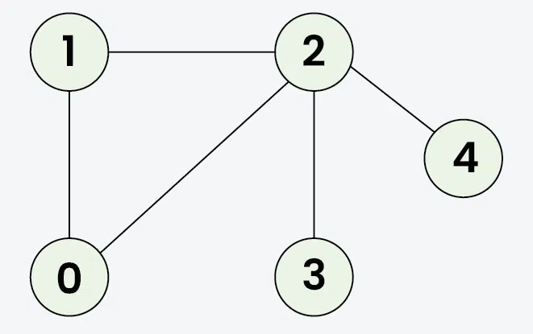

Depth First Search
Depth First Traversal (or DFS) for a graph is similar to Depth First Traversal of a tree. Like Trees, we traverse all adjacent one by one, when we traverse an adjacent, we finish traversal of all vertices reachable through the adjacent completely. After we finish one adjacent and its reachable, we go to the next adjacent and finish all reachable through next and continue this way. Similar to tree where we first completely traverse the left subtree and then go to the right subtree. The only catch here is, that, unlike trees, graphs may contain cycles (a node may be visited twice). To avoid processing a node more than once, use a boolean visited array.
Example:
Input: V = 5, E = 5, edges = {{1, 2}, {1, 0}, {0, 2}, {2, 3}, {2, 4}}, s = 1

Output: 1 2 0 3 4
Explanation: The source vertex s is 1. We visit it first, then we visit an adjacent. There are two adjacent 1, 0 and 2. We can pick any of the two
- Start at 1: Mark as visited. Output: 1
- Move to 2: Mark as visited. Output: 2
- Move to 0: Mark as visited. Output: 0 (backtrack to 2)
- Move to 3: Mark as visited. Output: 3 (backtrack to 2)
- Move to 4: Mark as visited. Output: 4 (backtrack to 1)
DFS for Complete Traversal of Disconnected Undirected Graph:
The above implementation takes a source as an input and prints only those vertices that are reachable from the source and would not print all vertices in case of disconnected graph. Let us now talk about the algorithm that prints all vertices without any source and the graph maybe disconnected.
Thank You!